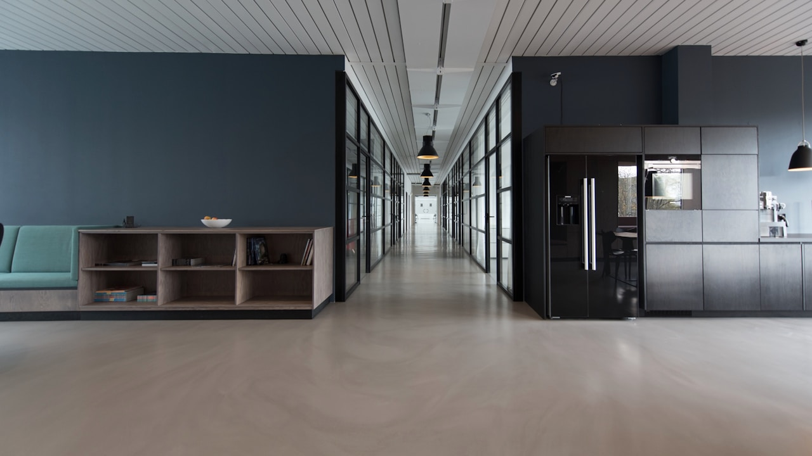
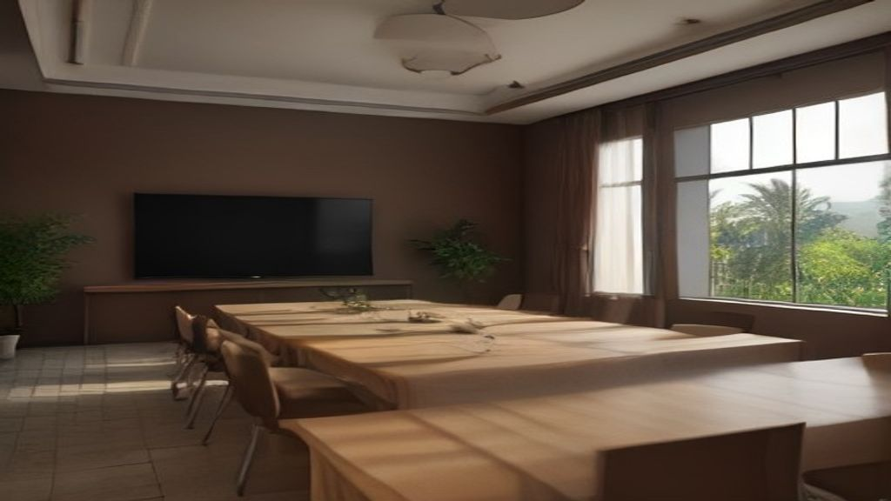

Le Référencement Naturel (SEO) au Maroc : Le Levier de Croissance que les Dirigeants ne Peuvent plus Ignorer
En résumé : Référencement Naturel (SEO) au Maroc : Le Guide Décisionnel 2026 pour un Budget à ROI Garanti est une démarche stratégique clé dans le domaine du Référencement Naturel (SEO). Elle permet aux entreprises au Maroc d’optimiser durablement leurs performances digitales, d’augmenter leur visibilité et de maximiser le retour sur investissement (ROI) de leurs campagnes.
Le Référencement Naturel (SEO) désigne l'ensemble des techniques visant à positionner un site web dans les premiers résultats organiques de Google. Pour un dirigeant, c'est le seul canal d'acquisition qui travaille pour vous 24h/24, 7j/7, sans payer chaque clic, et qui génère un retour sur investissement (ROI) exponentiel sur le long terme. C'est l'actif le plus rentable de votre stratégie digitale en 2026.
Le Vrai Coût du SEO au Maroc : Décryptage d'un Budget d'Acquisition
Dirigeant, oubliez les idées reçues. Le SEO n'est pas une dépense, c'est un investissement. Mais encore faut-il savoir où vous mettez les pieds. Au Maroc, les tarifs pratiqués sont aussi variés que les promesses des prestataires. Vous trouverez des freelances à 3 000 MAD par mois et des agences internationales à 30 000 EUR. Mais qu'est-ce qui justifie cet écart? Et surtout, qu'est-ce qui génère du retour sur investissement pour votre entreprise?
Un budget SEO réaliste pour une PME ambitieuse à Casablanca ou Rabat se situe entre 15 000 MAD et 40 000 MAD par mois. Pour une multinationale visant des marchés internationaux, ce budget peut atteindre 10 000 EUR mensuels. Mais attention : le montant n'est pas le critère. La stratégie, la transparence et l'expertise le sont. Un mauvais SEO à 5 000 MAD est un gaspillage pur. Un bon SEO à 30 000 MAD est une machine à cash.
Prenons un exemple concret. Une entreprise B2B de services à Casablanca investit 25 000 MAD par mois en SEO. En 6 mois, elle génère 80 leads qualifiés par mois. Avec un taux de conversion de 20%, cela représente 16 contrats signés. Si le panier moyen est de 50 000 MAD, le chiffre d'affaires généré est de 800 000 MAD par mois. Le retour sur investissement est colossal : 32x. C'est ça, la puissance d'un SEO bien exécuté.
Le SEO en 2026 : Ce Qui a Changé et Pourquoi Votre Stratégie Actuelle est Obsolète
Si vous pensez que le SEO consiste encore à insérer des mots-clés dans vos pages, vous êtes en danger. En 2026, Google est une intelligence artificielle. Il comprend le contexte, l'intention et la sémantique. Il pénalise les sites lents, les contenus pauvres et les stratégies de liens artificiels. Le futur du SEO, c'est le GEO (Generative Engine Optimization), où l'on optimise pour les moteurs de recherche traditionnels ET pour les réponses générées par l'IA (ChatGPT, Perplexity, Google AI Overviews).
Les dirigeants qui réussissent au Maroc sont ceux qui ont compris ce changement. Ils ne demandent plus "Combien de mots-clés?" mais "Comment devenir l'autorité incontestée de mon secteur?". Ils investissent dans des contenus qui répondent aux vraies questions de leurs clients. Ils optimisent la vitesse de leur site pour mobile. Ils construisent une marque forte qui génère des recherches de nom de marque. C'est ce que nous appelons chez DatRey le SEO Stratégique & Rentable.

Comparatif Décisionnel : Freelance, Petite Agence, ou Partenaire Stratégique?
Voici le dilemme classique du dirigeant marocain. Le freelance est séduisant par son prix. Mais il est souvent isolé, sans accès aux outils premium, et sa disponibilité est limitée. La petite agence est plus structurée, mais elle applique souvent des méthodes génériques qui ne collent pas à votre business. Le partenaire stratégique, comme DatRey, est un investissement. Nous ne vendons pas des heures. Nous vendons des résultats mesurables et une croissance rentable.
Un dirigeant averti ne choisit pas un prestataire sur un devis. Il choisit un partenaire qui comprend son marché, ses clients et ses objectifs de chiffre d'affaires. Il exige des KPIs précis : trafic qualifié, taux de conversion, pipeline généré. Il demande des études de cas locales, pas des références internationales hors-sol. Il exige une transparence radicale sur les actions menées.
Optimisation Budgétaire : Comment Allouer Chaque Dirham pour un ROI Maximum
Voici la matrice d'allocation budgétaire que nous recommandons à nos clients à Marrakech, Tanger et Casablanca. Sur un budget mensuel de 30 000 MAD, voici la répartition optimale :
1. Audit & Stratégie (15%) : 4 500 MAD. C'est la boussole. Sans une stratégie claire, vous naviguez à vue. Cela inclut la recherche de mots-clés, l'analyse concurrentielle et la définition des personas.
2. Contenu & Optimisation On-Page (40%) : 12 000 MAD. Le contenu est le roi. Pas du contenu générique, mais des pages piliers, des articles de blog stratégiques et des fiches produits qui convertissent. Chaque page est optimisée pour l'intention de recherche et pour les AI Overviews.
3. Netlinking & Autorité (25%) : 7 500 MAD. La construction de liens de qualité est cruciale. Nous privilégions les relations presse, les partenariats locaux et les collaborations avec des sites d'autorité marocains et internationaux.
4. Technique & Performance (20%) : 6 000 MAD. Un site rapide et sécurisé est non négociable. Cela inclut l'optimisation de la vitesse, le nettoyage du code, et l'amélioration de l'expérience utilisateur.
Cette répartition n'est pas figée. Elle est ajustée chaque trimestre en fonction des données. Si le contenu génère plus de leads, on y investit davantage. Si la technique est un frein, on la corrige en priorité. C'est de l'optimisation budgétaire dynamique, pas un budget statique.
Le SEO Rentable : Les KPIs qui Comptent Vraiment pour Votre Business
Il est temps de briser le mythe du classement. Se positionner en première page sur un mot-clé qui n'apporte pas de clients est une victoire vide. Les KPIs qui comptent sont : le trafic organique qualifié (les visiteurs qui correspondent à votre cible), le taux de conversion (le pourcentage de visiteurs qui deviennent des leads), le coût par acquisition (CPA) (combien vous coûte chaque nouveau client), et le retour sur investissement (ROI) (le chiffre d'affaires généré par rapport à votre investissement).
Imaginez : vous êtes une entreprise de logistique à Tanger. Vous visez les entreprises qui exportent vers l'Europe. Votre site est en français et en anglais. Grâce à une stratégie de contenu ciblée, vous attirez 200 visiteurs par mois. Sur ces 200, 30 remplissent un formulaire de devis. Votre équipe commerciale en convertit 5 en contrats. Chaque contrat vaut 100 000 MAD. Votre SEO vous a rapporté 500 000 MAD. C'est ça, la rentabilité. Et c'est exactement ce que nous construisons chez DatRey.

Les Erreurs Fatales qui Détruisent Votre Budget SEO au Maroc
L'erreur numéro un : attendre des résultats en 30 jours. Le SEO est un marathon, pas un sprint. Un calendrier réaliste pour des résultats significatifs est de 4 à 6 mois. Méfiez-vous des agences qui promettent la lune en 3 semaines. L'erreur numéro deux : se focaliser sur des mots-clés trop génériques. "Agence web" est un mot-clé ultra-concurrentiel. "Agence web spécialisée dans l'immobilier à Casablanca" est une mine d'or. L'erreur numéro trois : négliger l'expérience utilisateur. Un site lent, mal conçu, avec un parcours d'achat complexe, fera fuir vos visiteurs. Google le verra et vous déclassera.
Enfin, l'erreur la plus coûteuse : ne pas mesurer. Si vous ne suivez pas vos KPIs, vous ne savez pas ce qui fonctionne. Vous jetez votre argent par les fenêtres. Chez DatRey, nous mettons en place des tableaux de bord en temps réel. Vous voyez chaque visite, chaque lead, chaque conversion. Vous savez exactement ce que votre argent produit.
Pourquoi DatRey est le Partenaire Stratégique des Dirigeants Exigeants
Nous ne sommes pas une énième agence de SEO. Nous sommes une équipe de stratèges, de data analysts et de créatifs qui transforment votre site en une machine d'acquisition client. Nous avons développé une méthodologie exclusive, le ROI-First Methodology™, qui lie chaque action SEO à un objectif business concret. Nous ne nous arrêtons pas au trafic. Nous optimisons chaque étape du tunnel de conversion pour maximiser votre chiffre d'affaires.
Nos clients à Casablanca, Rabat, Marrakech et à l'international ne sont pas des clients. Ce sont des partenaires. Nous célébrons leurs victoires comme les nôtres. Nous sommes exigeants, transparents et obsédés par les résultats. Si vous en avez assez des promesses vides et que vous voulez une croissance mesurable et rentable, vous êtes au bon endroit.
Conclusion : Transformez Votre Budget SEO en Actif Stratégique
Le marché marocain est en pleine effervescence. Les entreprises qui domineront les années à venir sont celles qui ont compris que le SEO est un investissement stratégique, pas une dépense. En 2026, la concurrence est féroce. Chaque jour passé sans une stratégie SEO solide est un jour où vos concurrents vous volent des parts de marché. Ne laissez pas votre budget être gaspillé dans des tactiques obsolètes.
Prenez une décision éclairée. Demandez votre Audit Digital Gratuit chez DatRey. Nous analyserons votre présence en ligne, identifierons les opportunités de croissance les plus rentables et vous livrerons une feuille de route claire et chiffrée. C'est le premier pas vers une domination digitale durable. Votre croissance rentable commence ici.
Contactez DatRey dès aujourd'hui. Votre futur vous remerciera.